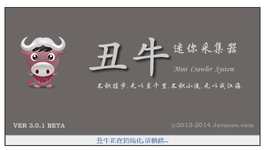
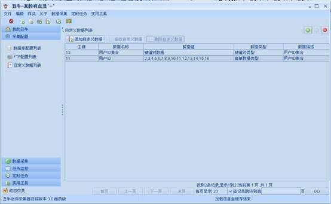
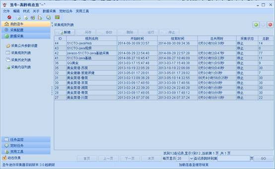
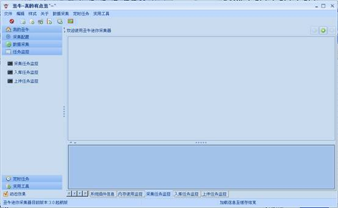
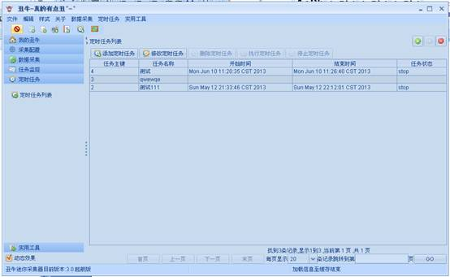

丑牛迷你采集器3.0总体概述
一：个人信息
作者：Javacoo
日期：2014-09-01
版本：3.0
QQ：164863067
QQ群：217690017
个人网站： www.javacoo.com
二：架构说明
系统是基于 Swing+Spring-3.2.4+Mybatis-3.1.1+C3p0-0.9.1.2+Sqlite等技术实现的。
采用插件式开发模式，各大功能模块均可独出来，功能与系统UI对立，可配置性较强。
三：功能概述
1：系统登录界面:
2：系统启动界面:

3：系统主界面：
(1)我的丑牛：系统信息，插件信息,内存监控，以及任务监控。
(2)采集配置：采集相关的基础配置，包括远程数据库配置，FTP配置，自定义数据配置

(2)数据采集：对采集过程统一管理，包括采集公共参数设置，采集规则列表，采集历史列表，采集内容列表

(3)任务监控：包括采集任务监控，入库任务监控，上传任务监控

(4)定时任务：定时执行采集任务

(5)实用工具：包括图片处理